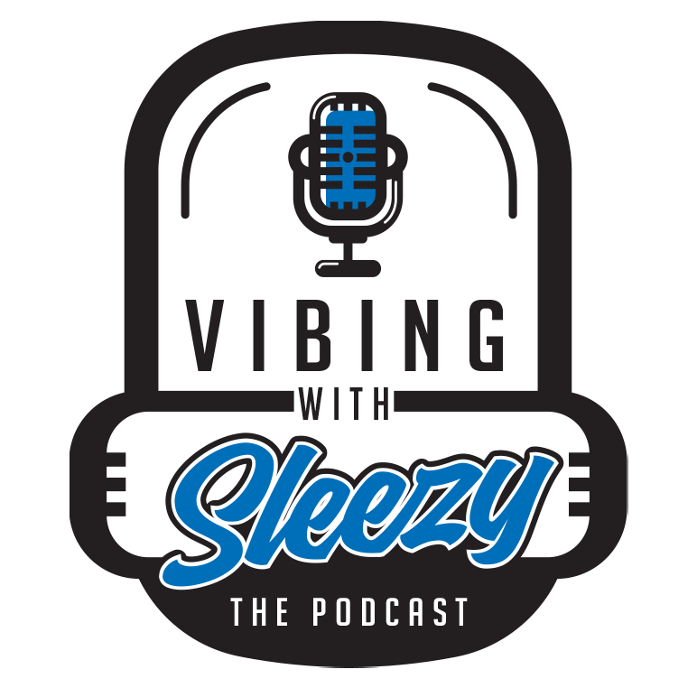

SLEEZY E
Listen
World of Sleezy
Guestbook
Merch/Donate
Partners
Contact

You can also listen on
Spotify
,
Apple Podcasts
or anywhere that you can get your favorite podcasts!
Copyright © 2023 Vibing With Sleezy